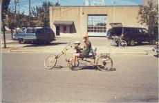

{kind=link}
{kind=link}
{kind=link}
{kind=link}
{kind=link}
{kind=link}
{kind=link}
{kind=link}
{kind=link}
{kind=link}
{kind=link}

In August of 2002 we invited the people of Portland to a chopper construction workshop.
| Preparations for the workshop began months in advance as we built up the pile. We consolidated piles from several chunkyards around town, and scrounged bikes and parts, especially precious rear wheels, from the Community Cycling Center dumpster and Citybikes freebin. Many participants brought supplies of their own, amassing a beautiful load of crap that was soon spread all over the street. | ||
|
The workshop began with a short lecture. It started with basic physics and cycle handling, and continued with planning and assembly techniques, hack mitering, ways to stick stuff together that tend to result in stronger joins, and the all-important rules of project triage and planning around the available parts to be scrounged from the pile. Testing probably wasn't stressed enough, because some people spent hours getting everything working on a bike that folded like a book as soon as it was ridden. |
||
| We had four oxy-acetylene rigs and one MIG welder working simultaneously. Vog the Smeltor worked a torch all day. | ||
| People made bikes for their children or, if they were a little young still, rode them around to get them hooked. | ||
|  | ||
| This kept us busy, however, running around and sticking goggles on kids or moving them away from dangerous situations. | ||
| The street was turned into a sketchy bike construction and destruction area. We combed through the detritus in the gutters for days afterwards and skimmed out many small parts that can be hard to find in a pinch. | ||
| Hours went by. Bikes were built, broken, and rebuilt. People wore out and went home, or stayed anyways in dogged pursuit of their dream choppers. The sun set. Food was cooked and eaten among the twisted metal. Eventually we called it a night, and went for a ride. A few more mutated bikes now roll down the streets of Portland. |
(Return to C.H.U.N.K. Operations)
| Copyright 2003 Megulon Five <megulon5@dclxvi.org>. |
|
This work is licensed under a Creative Commons License. | Last modified 6 July 2003. |